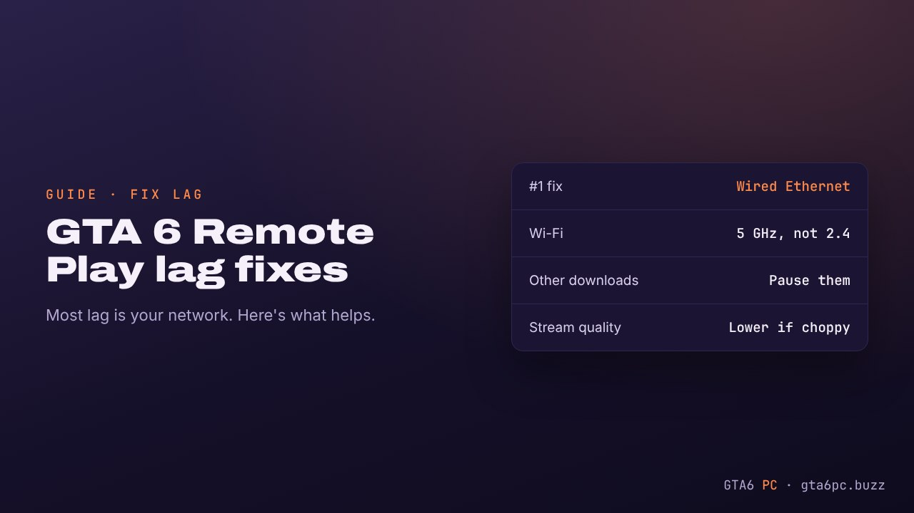

GTA 6 Remote Play lag on PC: 9 fixes that help
Remote Play is the only legal way to play GTA 6 on a PC right now, but it can feel laggy or look blurry. Most problems come down to the network. Here's how to fix them.

1. Wire the console
This makes the biggest difference by far. Connect your PS5 or Xbox to the router with an Ethernet cable. The console is the one sending the video, so it needs the steadiest connection.
2. Wire the PC too, if you can
A wired PC removes most remaining stutter. If you can't run a cable, powerline adapters or a mesh system's wired backhaul can help.
3. Use 5 GHz Wi-Fi, not 2.4 GHz
If you must use Wi-Fi, connect to your router's 5 GHz network. It's faster and less crowded. Stay close to the router, ideally in the same room.
4. Stop other heavy traffic
Pause big downloads, game updates, cloud backups and video streams on other devices while you play. GTA 6's own updates are large, so let them finish before a session.
5. Lower the stream quality
Both PS Remote Play and the Xbox app let you choose stream resolution or quality. If the picture stutters, drop it a level. A slightly softer but smooth picture plays better than a sharp, choppy one.
6. Play at home when possible
Remote Play works over the internet, but playing on the same home network as your console is much smoother. Away from home, your home upload speed becomes the bottleneck.
7. Update everything
Update the console's system software, the PS Remote Play app or Xbox app, your PC's network drivers and your router firmware. GTA 6 itself also needs the latest console updates.
8. Use a wired controller
Plug your controller into the PC with a USB cable. It removes a small amount of Bluetooth delay and avoids disconnects.
9. Restart the router
Simple, but it often fixes sudden lag. If your router has QoS or a gaming mode, prioritize the console and PC.
Still laggy?
If none of this helps, a capture card gives a lag-free picture on your PC monitor, as long as the console is at your desk. Either way, it's still the console version running at 30 FPS. The native PC version is reported for early 2027.
Last updated . We update this page when Rockstar announces anything new.